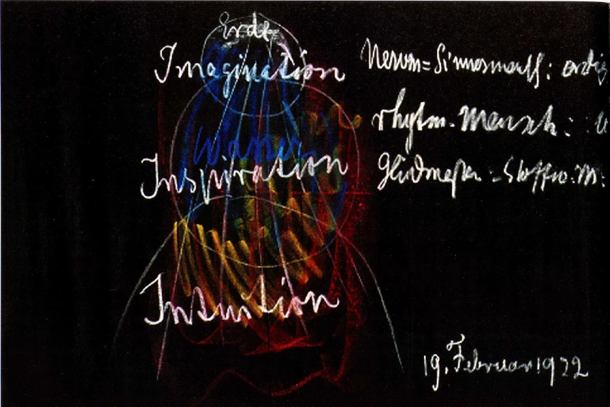

The threefold bodily organization
Distinguish a functional account of bodily life from body, soul and spirit.
Builds on: Inward experience and the I.
Understand the relationship
We have studied three relationships to the world and four members of the human being. A further account asks about the organization of bodily activity. Steiner distinguishes nerve-sense, rhythmic and metabolic activity; movement belongs with the metabolic-limb aspect in this terminology.
He relates these respectively to thinking, feeling and willing. This is a proposed correspondence between bodily and soul activity, not a renaming of body, soul and spirit. It concerns cooperating functions, not three separate people or a simple division into head, chest and everything below.
When studying a diagram, distinguish its categories from its explanatory arrows. The names of the systems identify what is being compared; the arrows express Steiner’s claims about their relationships. Neither a diagram nor an everyday experience of breathing establishes the whole account.
Read this as Steiner’s spiritual-physiological interpretation, not as a substitute for contemporary physiology. The source lecture also advances specific claims about nerves; these require separate scientific assessment and are not prerequisites for learning the conceptual distinction here.
From Steiner’s blackboard

Rudolf Steiner · historical blackboard drawing reproduced by the Rudolf Steiner Archive.
- Nerves and senses: bodily organization emphasized in the head, extending through the organism.
- Rhythmic organization: the interplay of breathing and circulation, emphasized in the chest.
- Metabolism and limbs: processes that support nourishment and movement throughout the organism.
This lecture drawing has a wider context: Steiner also discusses elements and the spiritual modes of cognition Imagination, Inspiration and Intuition. Its colours are not a key for the four members. Bodily threefold organization is a different distinction from body–soul–spirit. Read the lecture for the complete interpretation.
Source and context: GA 210 · 19 February 1922 · Dornach · View full-size image
{kind=link}
A functional emphasis is not an isolated compartment
The nerve-sense, rhythmic and metabolic-limb accounts distinguish kinds of activity within the bodily whole. Sense perception and relatively still attention characterize one pole; movement and transformative activity characterize another; rhythmic processes mediate. The head, chest and limbs provide useful spatial orientations, but the functions do not stop at borders between body regions.
Consider walking while listening to another person. Movement, breathing, perception and attention occur together. Naming one activity does not remove the others or locate the whole experience in one organ. This matters when later chapters compare a plant’s root, leaf and flowering regions with human activities. First understand the functional relationship being proposed; do not turn an illustrative correspondence into a map of separate containers. This threefold account also answers a different question from body, soul and spirit.
Reading connection: Foundation course · threefold bodily organization.
Connect to the source
GA 301 · Basel · 21 April 1920 · bodily organization
The explanation above is original course teaching. For closer reading, identify where the source makes the distinction discussed here.
Read the source →One question to work through
Does “threefold” always mean body, soul and spirit?
Write a short answer in your notebook before comparing it with the explanation.
Compare with an explained answer
No. In this lesson it refers to bodily functions. Always name the three terms and the question the account addresses before comparing it with another threefold account.